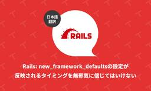

TechRacho
https://techracho.bpsinc.jp
TechRacho（テックラッチョ）は、BPSスタッフがおくるシステム開発＋αのアイデアマガジンです。Ruby on Railsネタ、EPUBの電子書籍ビューワに関連したAndroid/iOS開発ネタが多いです。社内の雰囲気がわかる記事もあるので興味をもってくださる方はぜひご覧ください。
フィード
保存版: どんなAIでも役に立つ文章力と会話力（1）チャットの「ありがとう」は効く 1
1
TechRacho
本記事は、CC BY-SA 4.0ライセンスで公開します。 コモンズ証 - 表示-継承 4.0 国際 - Creative Commons 本記事の文面は、明示している部分を除き、AIでは生成していません。 本シリーズ記事では簡単のため、特に断らない限り、各種AIサービスやLLM（大規模言語モデル）といった個別の要素を捨象して、一般的な語である「AI」と呼ぶことにしています。 本シリーズ記事で扱うAIは、特に断らない限り、以下の分類で言う「生成AI」、その中でも会話（自然言語）による指示で動くAIに限定しています。また、AIの用途も基本的に業務用を想定しています。 生成AI: 新しいコンテンツを生成するAI（チャ […]The post 保存版: どんなAIでも役に立つ文章力と会話力（1）チャットの「ありがとう」は効く first appeared on TechRacho.
2日前

Rails: new_framework_defaultsの設定が反映されるタイミングを無邪気に信じてはいけない（翻訳） 3
TechRacho
概要 元サイトの許諾を得て翻訳・公開いたします。 英語記事: I do not blindly trust setting things in new_framework_defaults initializers anymore | Arkency Blog 原文公開日: 2025/06/10 原著者: Piotr Jurewicz 日本語タイトルは内容に即したものにしました。 参考: Rails アップグレードガイド - Railsガイド 以下の記事にも同様のトピックが含まれていますので、参考までにどうぞ。 Rails: configuration あるいは load_defaults の話 Rails: n […]The post Rails: new_framework_defaultsの設定が反映されるタイミングを無邪気に信じてはいけない（翻訳） first appeared on TechRacho.
2日前
Rubyの新機能: 埋め込みTypedDataオブジェクトが実装された（翻訳） 7
TechRacho
概要 CC BY-NC-SA 4.0 Deedに基づいて翻訳・公開いたします。 英語記事: Implementing Embedded TypedData Objects | Rails at Scale 原文公開日: 2025/06/06 原著者: Peter Zhu CC BY-NC-SA 4.0 Deed | 表示 - 非営利 - 継承 4.0 国際 | Creative Commons 日本語タイトルは内容に即したものにしました。 参考: TypedDataについて - mirichiの日記 Rubyの新機能: 埋め込みTypedDataオブジェクトが実装された（翻訳） CRubyのオブジェクトは、内部的 […]The post Rubyの新機能: 埋め込みTypedDataオブジェクトが実装された（翻訳） first appeared on TechRacho.
3日前
Railsスケーリング（3）: GVL競合を計測してプロセスごとの理想的なスレッド数を決定する（翻訳） 2
TechRacho
概要 元サイトの許諾を得て翻訳・公開いたします。 英語記事: Finding ideal number of threads per process using GVL instrumentation 原文公開日: 2025/05/06 原著者: Vishnu M 日本語タイトルは内容に即したものにしました。 Railsスケーリング（3）: GVL競合を計測してプロセスごとの理想的なスレッド数を決定する（翻訳） 本記事は、「Railsをスケーリングする」シリーズのパート3です。 パート1では、Rails アプリケーションに最適なプロセス数を見つける方法について説明しました。 パート2では、理想的なスレッド数を理論 […]The post Railsスケーリング（3）: GVL競合を計測してプロセスごとの理想的なスレッド数を決定する（翻訳） first appeared on TechRacho.
4日前
RubyのRactorを解き放つ（2）クラスインスタンス変数の競合を解消する（翻訳） 2
TechRacho
概要 原著者の許諾を得て翻訳・公開いたします。 英語記事: Unlocking Ractors: class instance variables | byroot’s blog 原文公開日: 2025/05/24 原著者: byroot -- Railsコアコミッター、Rubyコミッターであり、ShopifyのRuby/Railsインフラチームのシニアスタッフエンジニアです 日本語タイトルは内容に即したものにしました。 RubyのRactorを解き放つ（2）クラスインスタンス変数の競合を解消する（翻訳） Ractorに関する過去記事では、アプリケーション全体を1つのRactor内で実行できる可能性は低いと私が考 […]The post RubyのRactorを解き放つ（2）クラスインスタンス変数の競合を解消する（翻訳） first appeared on TechRacho.
5日前

playwright-mcpで大きなページのtoken limit問題を解決するAPIを実装してみた
TechRacho
morimorihoge です。最近Claude Code MAX 20xに秘書をさせてみたらかなり良くて、業務の進め方が大幅に変わりました（この辺の詳細もまたそのうち書こうと思います）。 Claude Codeなり他のMCPプロトコルに対応したAIエージェントを使っている人は皆さんご存じの playwright-mcp 、雑な自然言語で指示を出したら良い感じにAIエージェントがブラウザを操作して色々やってくれる、便利な世界がやってきたと話題です。 Playwrightとは何なのか、MCPサーバーとは何なのかという話については以下のサイトや他にも無限に解説しているサイトがあるのでそちらを参照して下さい。 Qiit […]The post playwright-mcpで大きなページのtoken limit問題を解決するAPIを実装してみた first appeared on TechRacho.
9日前
型付けの "duplicate duck" 落とし穴を踏んだ話（翻訳）
TechRacho
概要 元サイトの許諾を得て翻訳・公開いたします。 英語記事: Bad Type Patterns - The Duplicate duck 原文公開日: 2025/05/07 原著者: Richard Schneeman 日本語タイトルは内容に即したものにしました。 文中に登場するsynはRustのパーサーです。 型付けの "duplicate duck" 落とし穴を踏んだ話（翻訳） みんなももっと型を書けばいいのに、そうしていないのはなぜでしょうか？おそらくですが、うまくいかないパターンを中級・上級開発者たちが取り除いたことで、初心者が学ぶ道すじが残されていないからなのでしょう。 本記事では、最近私が削除したパ […]The post 型付けの "duplicate duck" 落とし穴を踏んだ話（翻訳） first appeared on TechRacho.
9日前
JavaScriptのif/else地獄をリファクタリングで解消する（翻訳）
TechRacho
概要 元サイトの許諾を得て翻訳・公開いたします。 英語記事: Refactoring an if/else hell in JavaScript | Rails Designer 原文公開日: 2025/06/06 原著者: Rails Designer -- Railsフロントエンド関連記事に加えて、ViewComponentとTailwind CSSを用いた美しいUIコンポーネントを販売しています 利便性のため、コードのdiffも追加しています。 JavaScript: if/else地獄をリファクタリングで解消する（翻訳） 本記事は、私の近著『JavaScript for Rails Developers』 […]The post JavaScriptのif/else地獄をリファクタリングで解消する（翻訳） first appeared on TechRacho.
10日前
Railsにジョブを中断・再開できるActive Job Continuationがマージされた（翻訳）
TechRacho
概要 元サイトの許諾を得て翻訳・公開いたします。 英語記事: Active Job Continuations 原文公開日: 2025/06/09 原著者: Vishnu M 日本語タイトルは、内容に即したものにしました。 Active Job Continuationについては、以下のドキュメント更新も進行中です。 PR: Add documentation for Active Job Continuations [ci skip] by satyakampandya · Pull Request #55193 · rails/rails Railsにジョブを中断・再開できるActive Job Contin […]The post Railsにジョブを中断・再開できるActive Job Continuationがマージされた（翻訳） first appeared on TechRacho.
11日前
SQLite on Railsシリーズ（13）プレフィックス付きのULIDキー（翻訳）
TechRacho
概要 原著者の許諾を得て翻訳・公開いたします。 英語記事: Prefixed ULID keys | Fractaled Mind 原文公開日: 2023/12/13 原著者: Stephen Margheim -- フルスタックRails開発者であり、RailsのSQLite強化作業の中心人物です。Rails 8+SQLiteによる学習動画サイトHigh Leverage Railsを主催しています。 参考: Rails 8はSQLiteで大幅に強化された「個人が扱えるフレームワーク」（翻訳）｜YassLab 株式会社 日本語タイトルは内容に即したものにしました。 SQLite on Railsシリーズ（13） […]The post SQLite on Railsシリーズ（13）プレフィックス付きのULIDキー（翻訳） first appeared on TechRacho.
12日前